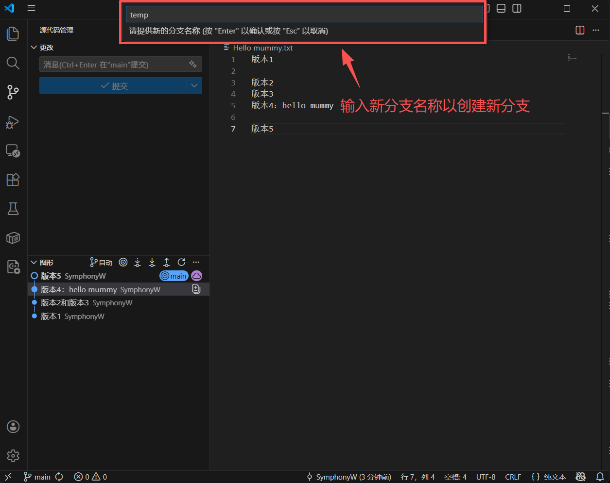

Git 版本控制指令完全指南
这份指南旨在帮助你从“会用 Git”进阶到“熟练掌握 Git”。Git 的核心逻辑围绕着四个区域展开：工作区 (Working Directory)、暂存区 (Staging Area/Index)、本地仓库 (Local Repo) 和 远程仓库 (Remote Repo)。
1. 基础配置 (Configuration)
在开始之前，必须告诉 Git 你是谁。
| 指令 | 作用 |
|---|---|
| git config --global user.name “Your Name” | 设置全局用户名 |
| git config --global user.email “email@example.com” | 设置全局邮箱 |
| git config --list | 查看当前所有的配置信息 |
| git config --global core.editor “code --wait” | 将 VS Code 设为默认编辑器（用于编写复杂的提交信息或合并冲突） |
2. 初始化与克隆 (Setup & Project Start)
| 指令 | 作用 |
|---|---|
| git init | 在当前文件夹初始化一个新的 Git 仓库 |
| git clone <url> | 下载一个远程仓库到本地 |
| git remote add origin <url> | 将本地仓库关联到一个远程仓库（origin 是远程仓库的默认代称） |
3. 日常开发“三部曲” (The Basic Workflow)
这是你每天使用次数最多的指令。
| 指令 | 作用 |
|---|---|
| git status | 查看状态。显示哪些文件被修改了、哪些在暂存区、哪些未被追踪。 |
| git add <file> | 将指定文件添加到暂存区。git add . 代表添加当前目录下所有变更。 |
| git commit -m “message” | 将暂存区的文件提交到本地仓库。-m 后面必须跟随清晰的说明。 |
| git diff | 查看工作区与暂存区的代码差异（即你到底改了哪几行）。 |
| git log | 查看提交历史。常用参数：–oneline (精简一行显示), --graph (显示分支图)。 |
4. 分支管理 (Branching)
“熟练”的关键在于对分支的掌控。
| 指令 | 作用 |
|---|---|
| git branch | 查看所有本地分支。 |
| git branch <name> | 创建一个新分支，但不切换过去。 |
| git checkout <name> | 切换到指定分支。 |
| git checkout -b <name> | 最常用：创建并立即切换到新分支。 |
| git merge <name> | 将指定分支合并到当前分支。 |
| git branch -d <name> | 删除已合并的分支。 |
| git rebase <name> | 进阶：变基操作。将当前分支的修改在指定分支的基础上重新应用，保持历史线呈线性（面试常考点）。 |
5. 远程同步 (Remote Sync)
处理本地与 GitHub/GitLab 之间的通信。
| 指令 | 作用 |
|---|---|
| git fetch | 从远程拉取最新代码到本地仓库，但不自动合并到你的工作区。最安全。 |
| git pull | 从远程拉取并自动合并（相当于 fetch + merge）。 |
| git push origin <branch> | 将本地分支的提交推送到远程仓库。 |
| git remote -v | 查看远程仓库的详细地址信息。 |
6. 撤销与“后悔药” (Undo & Correction)
面试官非常看重开发者修复错误的能力。
| 指令 | 作用 |
|---|---|
| git checkout -- <file> | 丢弃工作区中某个文件的修改，恢复到最后一次提交的状态。 |
| git reset HEAD <file> | 将已提交到暂存区的文件撤回到工作区（Unstage）。 |
| git reset --soft HEAD~1 | 撤销上一次提交，但保留代码改动。常用于“提交错了，改改再提”。 |
| git reset --hard HEAD~1 | 危险：彻底撤销上一次提交，所有代码改动都会消失！ |
| git revert <commit-id> | 生成一个新的提交来抵消某次提交的改动。这是在公共分支撤销代码最安全的方式。 |
7. 进阶调试指令 (Power Tools)
| 指令 | 作用 |
|---|---|
| git stash | 神级指令：将当前未完成的工作“藏”起来。当你写到一半需要紧急修复另一个 Bug 时非常有用。 |
| git stash pop | 将“藏”起来的工作拿出来继续写。 |
| git cherry-pick <commit-id> | 挑选特定的一个提交，将其应用到当前分支。 |
| git blame <file> | 查看文件每一行是谁写的、什么时候写的（“追责”神器）。 |
| git clean -fd | 删除项目中所有未被追踪的文件和文件夹。 |
8. 面试高频问题：合并冲突 (Conflict Resolution)
当两个人在同一个文件的同一行做了修改，Git 会报 CONFLICT。
处理流程：
- 打开报错文件，找到 <<<<<<<, =======, >>>>>>> 标记。
- 手动决定保留哪部分代码。
- 删除冲突标记并保存文件。
- 执行 git add <file>。
- 执行 git commit -m “fix conflict”。
9. VS Code 深度集成使用指南 (GUI Tips)
在 VS Code 界面操作 Git 时，请注意以下细节：
界面元素拆解
- 侧边栏数字：显示当前尚未提交的变更文件数量。
- 文件列表图标：
- + (加号)：点击它相当于 git add，将文件移入“暂存的更改”。
- - (减号)：取消暂存，回到工作区。
- ⟲ (箭头)：丢弃更改（慎用！等同于 checkout --），会把你没保存的代码彻底删掉。
- 蓝色的“同步更改”按钮：执行的是 git pull 后紧接 git push。如果远程有冲突，此按钮会报错，建议先手动 Pull。
可视化冲突解决 (Merge Editor)
当发生冲突时，VS Code 会提示“在合并编辑器中打开”：
- 上方两个窗口：左边是“远程的改动”，右边是“你本地的改动”。
- 下方窗口：最终合并后的结果。
- 勾选框：你可以直接勾选想要保留的代码行，VS Code 会自动生成合并后的文件，比手动删 <<<<<<< 标记快得多。
原子化提交 (Partial Commit)
- 选中行提交：如果你在一个文件里写了两个功能，只想提交其中一个。在代码行号左侧点击右键，选择“暂存选定的范围”。这能实现比命令行更精细的版本控制。
多仓库管理 (Multi-root Repos)
- 如你截图中所示，VS Code 支持同时管理多个仓库。请确保在点击顶部的“√ (Commit)”图标前，选中的是正确的仓库分支，避免把博客的改动提交到了公共网页仓。
10. 核心注意事项与最佳实践
- 善用 .gitignore：
- 在根目录创建 .gitignore 文件。
- 必须忽略的东西：编译产生的二进制文件、临时文件夹（如 public/、node_modules/）、敏感信息（.env）。
- 一旦文件被忽略，VS Code 侧边栏那“几百个变更”就会消失，让界面清爽。
- 强制推送的禁忌：
- 在界面上右键点击“Push (Force)”是极度危险的操作。除非你是在修复自己的私人分支，否则严禁覆盖公共 main 分支。
- 提交前先拉取 (Pull before Commit)：
- 养成习惯，在开始写代码前先点一下左下角的刷新图标。确保你的代码是基于最新版本编写的，能减少 90% 的合并冲突。
- 推荐插件：GitLens：
- 安装后，点击代码行可以看到“是谁在什么时候改了这一行”，这在团队协作（或回溯自己两周前写的 Bug）时非常有帮助。
- 查看 Timeline 视图：
- 在 VS Code 文件资源管理器下方有一个 Timeline 栏。它可以让你看到单个文件的详细历史演变，即使你没有在 Git 视图里，也能快速找回之前的代码片段。
11. VS Code 文件状态标识详解 (File Status Indicators)
在 VS Code 的文件资源管理器或 Git 侧边栏中，文件名后面的字母和颜色代表了该文件的当前 Git 状态：
| 标识 | 完整名称 | 颜色 (默认) | 含义 |
|---|---|---|---|
| U | Untracked | 绿色 | 未追踪。这是一个新创建的文件，Git 还没有开始记录它的历史。 |
| M | Modified | 黄色/橙色 | 已修改。该文件在仓库中已存在，但你对它的内容做了改动。 |
| A | Added | 绿色 | 已添加。你执行了 git add，该文件已被放入暂存区，等待提交。 |
| D | Deleted | 红色 | 已删除。该文件已被删除，Git 记录了这一删除操作。 |
| R | Renamed | 绿色 | 重命名。你修改了文件名，Git 自动识别到了这一变动。 |
| C | Copied | 绿色 | 已复制。文件被复制了一份。 |
| ! | Ignored | 灰色 | 已忽略。该文件匹配了 .gitignore 的规则，Git 不会追踪它。 |
| S | Submodule | - | 子模块。该文件夹是一个嵌套的其他 Git 仓库。 |
状态组合示例：
- 文件名显示为红色且带 D：你删除了一个受版本控制的文件。
- 文件名显示为黄色且带 M：你修改了代码，但还没点那个 + 号（add）。
- 文件名显示为绿色且带 A：你点了 + 号，这行改动现在躺在暂存区里。
12. VS Code版本控制操作示例
基本操作与界面解释
 VS Code界面各部分所代表的意思
VS Code界面各部分所代表的意思
 提交后
提交后
 拉取并推送
拉取并推送
 完成
完成
分支相关操作
 创建新分支
创建新分支

输入分支名完成创建
 切换分支
切换分支